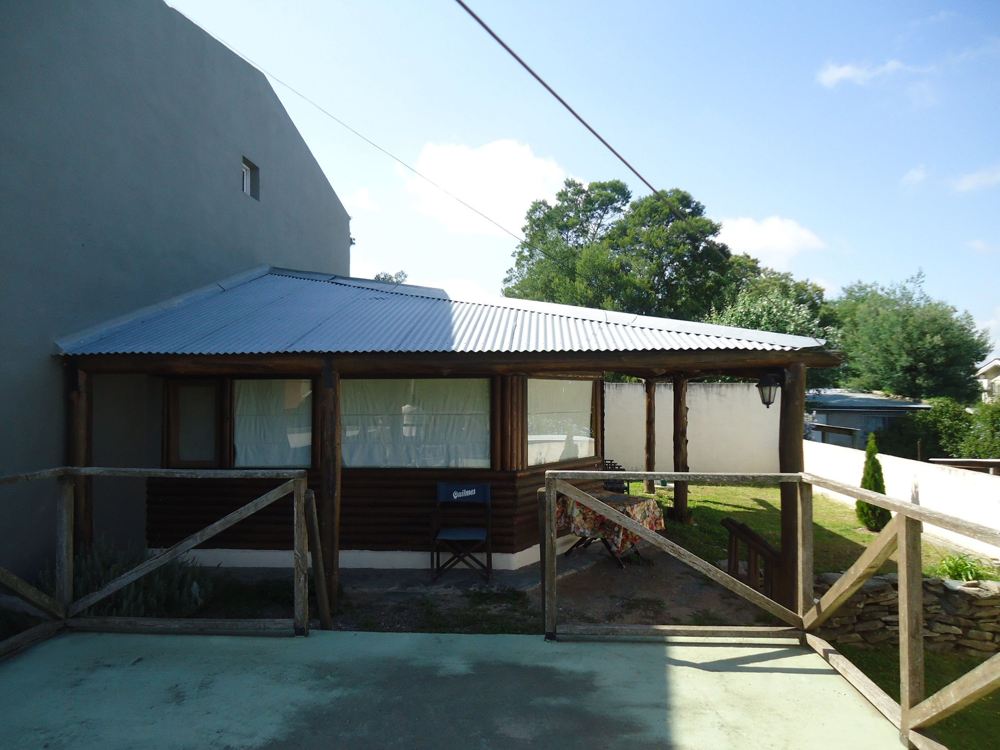

Todas las comodidades

Tranquilidad
La Cabaña el Fuerte Tandil es una propiedad independiente en Tandil. Ofrece un precioso jardín y vistas a las colinas. Proporciona estacionamiento gratuito. Esta casa de estilo rústico cuenta con terraza con muebles de jardín y vistas al jardín. Dispone de patio, cocina completa, parrilla y aire acondicionado. Incluye un baño completo y TV de pantalla plana. La Cabaña El Fuerte Tandil se encuentra a 500 metros del parque Independencia y del lago del Fuerte. ¡Hablamos tu idioma!